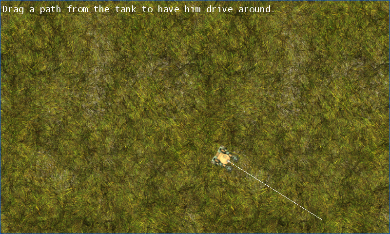

Path Drawing
Ported from Microsoft's XNA 4.0 Path Drawing sample for Windows Phone.
Source for this sample on GitHub ↗

Play ▸Opens in a new tab. Drag from the tank with a finger or the left mouse button.
About this sample
Touch the tank and draw a path through the grass. The sample turns the drag gesture into waypoints, draws the path with PrimitiveBatch and rotates the tank as it drives along it. The original uses touch only; this port also lets a left-mouse drag feed the same touch path.
Controls
| Action | Touch / mouse |
|---|---|
| Draw a path | Press on the tank and drag |
| Erase the path | Tap or click the tank |